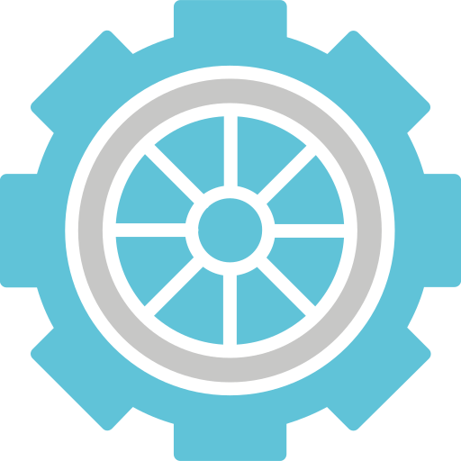
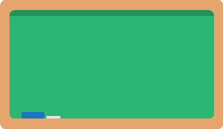
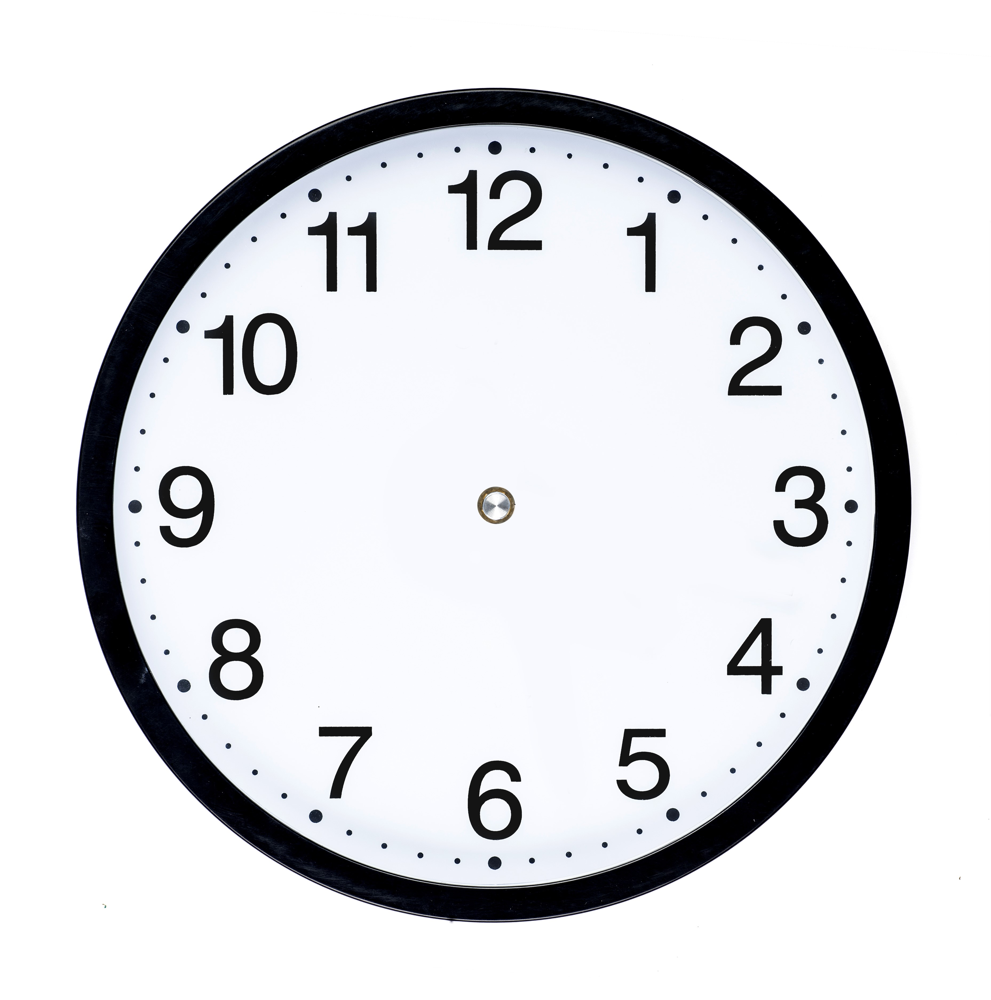
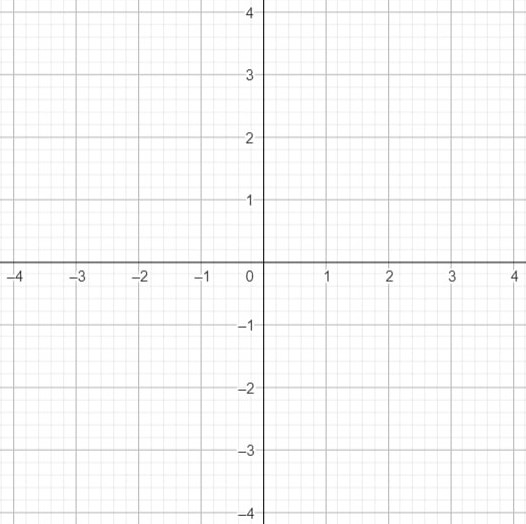

A
Jenis transformasi
Rotasi / Perputaran
Jenis Tranformasi yang akan dibahas selanjutnya adalah Perputaran atau Rotasi. Perputaran sendiri berkaitan tentang bagaimana suatu objek berputar pada sumbu atau poros tertentu
Contohnya saat bumi mengeliligi matahari dimana matahari sebagai sumbu atau pusatnya.


Contoh lain adalah roda yang berputar dimana pusatnya adalah poros roda itu sendiri

Pengertian Rotasi sendiri pada transformasi geometri adalah :
Rotasi adalah bentuk transformasi yang memutar setiap titik pada objek sampai sudut dan arah tertentu terhadap titik yang tetap.
Rotasi dengan titik pusatnya diluar objek

Rotasi dengan titik pusatnya di dalam objek
Sudut Rotasi
Sudut adalah istilah matematika untuk membicarakan tentang seberapa jauh dua garis atau dua sisi suatu bentuk berjauhan satu sama lain.
Pada rotasi, sudut menunjukkan sejauh mana kita memutar objek terhadap pusatnya.
Pada animasi di atas, kita bisa mengatakan bahwa
A’ merupakan hasil dari rotasi titik A sejauh 45 derajat pada pusat titik P
Arah Rotasi
Terdapat dua arah rotasi, searah jarum jam dan berlawanan arah jarum jam.

Rotasi Searah Jarum Jam
Rotasi Berlawanan Arah Jarum Jam
Arah Rotasi objek akan berpengaruh pada nilai derajat rotasinya.

Jika berotasi searah jarum jam, maka
sudutnya bernilai negatif
Jika berotasi
berlawanan arah jarum jam, maka
sudutnya bernilai positif
Agar lebih familiar lagi dengan sudut, di bawah ini kamu bisa mencoba melihat perbedaan pada setiap sudut istimewa

Tes Pemahaman
TES PERTAMA
Titik B dirotasikan dengan pusat titik P
B
P
Seberapa jauh titik B dirotasikan terhadap titik P ?
90°
120°
-120°
-180°
TES KEDUA
Titik B dirotasikan berlawanan arah jarum jam dengan pusat titik P sejauh 90°
P
B
Pilih titik abu abu yang merupakan hasil dari rotasi titik B atau B'
Kordinat Rotasi
Untuk menentukan kordinat dari hasil rotasi cukup memperhatikan 3 aspek yang telah dibahas.
Pusat rotasi, sudut rotasi, dan arah rotasi
Rotasi sama seperti jenis transformasi lainnya dimana memindahkan setiap titik pada objek untuk dirotasikan sejauh sudut tertentu.

Titik A ( 0 , -2 ) dirotasikan dengan pusat titik P ( 0 , 1 ) sejauh -90°.

P
-90°
A
A'
Diketahui:
Pusat rotasi adalah titik P ( 0 , 1 ) dengan sudut rotasi -90° dan arah rotasi searah jarum jam
Diperoleh:
Titik A ( 0 , -2 ) dirotasikan pada titk P sejauh -90° menghasilkan titik A’ ( 1 , 3 )

Segitiga ABC dengan kordinat A ( -1 , -2 ), B ( 2 , -2 ), C ( 2 , 0) dirotasikan terhadap titik P sejauh 180°
180°
180°
180°
P
A
B
C
A'
C'
B'
Diketahui:
Pusat rotasi adalah titik P ( -1 , 1 ) dengan sudut rotasi 180° dan arah rotasi berlawanan arah jarum jam
Catatan:
Setiap Titik yakni titik A, B, dan C dirotasikan 180° berlawanan arah jarum jam
Diperoleh:
Segitiga A'B'C' dengan kordinat A' ( -1 , 4 ), B' ( -4 , 5 ), C' ( -3 , 2)

Trapesium ABCD dengan kordinat A ( 0 , 0 ), B ( 0 , 2 ), C ( 2 , 2) , C ( 3 , 0) dirotasikan terhadap titik A sejauh 180°
A
B
C
D
B'
C'
D'
180°
Diketahui:
Pusat rotasi adalah titik A ( 0 , 0 ) dengan sudut rotasi 180° dan arah rotasi berlawanan arah jarum jam
Catatan:
Setiap Titik sudut Trapesium yakni titik B, C, dan D dirotasikan 180° berlawanan arah jarum jam kecuali titik A karena merupakan pusat rotasi
Diperoleh:
Segitiga A'B'C' dengan kordinat A' ( 0 , 0 ), B' ( 0 , -2 ), C' ( -2 , 2) D' ( 0 , -3 )
Tes Pemahaman
TES KETIGA
Terdapat titik A ( 4 , -2 ). Jika titik A dirotasikan terhadap titik ( 0 , -2 ) sejauh 90°, tentukan kordinat titik A'
Klik pada kordinat untuk memunculkan titik lalu cek jawabanmu pada tombol "Check"
TES KETIGA
Terdapat segitiga ABC. Segitiga ABC dirotasikan terhadap titik ( 0 , 0 ) sejauh -90°, tentukan kordinat segitiga A'B'C'
A
B
C
Pindahkan titik-titik sudut segitiga hijau hingga membentuk kordinat segitiga A'B'C'